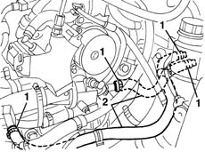
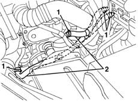

5010A08 (DUPLEX) supply and return PIPE between engine and heater - R.R.
- Path
- Procedures > 50 AUXILIARY UNITS > 5010 CLIMATE CONTROL - MISCELLANEOUS > 5010A heater pipes > 5010A08 (DUPLEX) supply and return PIPE between engine and heater - R.R.
- Kind
- repair procedure (removal / refitting; the operation number is the code)
- Applies to
- all engines; all production periods
- Interactive page
- https://sloeber94.github.io/elrnDB-lYpsln/en/#/2429279
Applies to: engines: 1.2 8v, 1.2 16v, 1.4 16v; all production periods
 Removing
Removing
 Refitting
RefittingPosition a suitable container for recovering the coolant fluid.
Mark the position of the heater supply and return connectors.
1. Loosen the bands retaining the duplex pipe.
2. Disconnect the duplex pipe from the connectors and left the coolant drain into a suitable container.

Applies to: engines: 1.3 JTD; all production periods
Removing
Refitting5530B52 Battery DRIP TRAY/SUPPORT - R.R.
Position a suitable container for recovering the coolant fluid.
Mark the position of the heater supply and return connectors.
1. Loosen the bands retaining the duplex pipe.
2. Disconnect the duplex pipe from the connectors and left the coolant drain into a suitable container.

Applies to: engines: 1.2 8v, 1.2 16v, 1.4 16v; all production periods
Refitting
RemovingCheck that the duplex pipe is not damaged and that there are no cracks which would affect the seal.
Reposition the duplex pipe and connect it to the connectors and tighten the retaining bands.
Applies to: engines: 1.3 JTD; all production periods
Refitting
RemovingCheck that the duplex pipe is not damaged and that there are no cracks which would affect the seal.
Reposition the duplex pipe and connect it to the connectors and tighten the retaining bands.